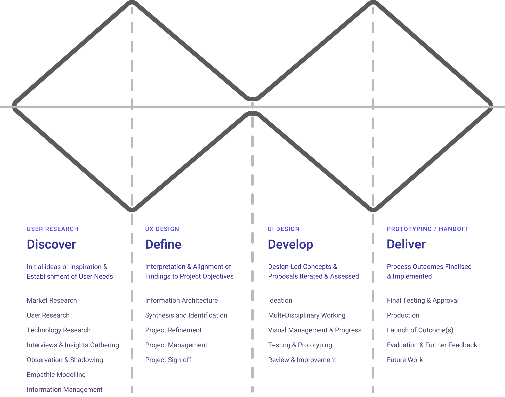

Fund Foundry
End-to-end product design for commercial savings app
The following is a case study of a self-imposed product design project demonstrating my design process from a project brief to production ready design. Meet fund foundry, an AI assistant enabled savings app with goal based savings.
Project summary
Brief
Design a sleek web app where users can automatically organize, grow, and track their savings across different goals (like holidays, emergencies, or investments).
AI chat is available on-demand to answer questions, give advice, and suggest savings optimizations — but it’s not the main way users interact.
Goal
Empower users to save more effectively by making goal-based saving visual, motivating, and simple AI helper when needed.
Problem Statement
People often have multiple saving goals but struggle to keep them organized or prioritize properly.
Most finance apps are focused on "budgeting" rather than visualizing and encouraging the act of saving itself.
Users want simple, flexible tools that grow with them — plus expert help when they ask for it.
My Approach
My approach to the product design process resembles the widely established ‘double-diamond’ method. Progressively working through the many facets of product design; research, low and high-fidelity design, prototyping and hand-off.
Communication in this process is incredibly important. Ideally I would also be checking in with users to validate designs at milestones of low and high fidelity designs. Along with team members in front-end/back-end and data engineering to ensure feasibility of the solution.

UX Research
Questions and considerations
After defining the project brief and problem statement I hade some questions and considerations that came to mind. If this was a real project I would use these initial assumptions to form the basis of questions that I would take into user interviews.
This being out of scope, I tried to workshop these ideas myself; thinking through potential answers, researching competitors and gaining more clarity through the defining UX practices that followed.
Visual research
During research I wanted to not only look into the features and various USPs that competitors had but also their visual atheistic and see how my application might want to situate itself in this market and how I can ensure the styling is inclusive and in keeping with the expectations of my defined user personas.

UX Design
Information architecture
With a firmer concept emerging through research I felt it was important to begin to the lay the ground work for the application and it’s scope. In FigJam I began to define the basic information architecture.
I was cognisant that this would likely be tweaked as the process went on, other ideas may emerge or features may make sense in other areas. This was used more as a guide to follow with the ability to remain agile enough that it wasn’t a restrictive authority.

User flow
After establishing the application’s overarching structure I wanted to dive deeper into defining the specific user flows. This example of creating a goal and then depositing cash felt like the corner stone of the product and one that all users would engage with.

If I had access to real users this would be something I would look to validate with them the ensure their needs will be met and there are no missing features.
Wireframes
Once I had established user flows I moved onto doing some quick iterative low fidelity wireframes in FigJam. This gave me a chance to experiment with layout and identify where I may be able to componentize some of the UI I will create in higher fidelity.


This is another milestone of the project and through my experience in product design often proves to be another great point to check in with users. Validating with wireframes and early flows helps the user get a good approximation for what the final version is intended to work like. Allowing for them to offer critique or suggestions, which can ultimately make it’s way into the final result.
UI Design
Defining visual style / branding
This being a ‘new’ product and not existing within an established corporate identity, part of the transition into higher fidelity design was to not only render the established flows in a more pixel perfect fashion but to define the product brand and apply that visual consistency throughout the UI.

Components within a design system
An important aspect of the high fidelity design is trying to componentise elements that are likely to be re-used through-out the design. Creating these establishes my component library which would then feed back into a wider design system, which is out of scope of this project. I was able to create a component page within Figma to organise components and draw these into my designs.


Screens and flows
My design process naturally leads through the screens and flows I’ve determined to be most pertinent to the project. Progressing from individual screens to fleshed out flows that can be prototyped and eventually broken down for engineering hand-off.

I am aware that because of the lack of engineering effort that would usually take place beyond design I am afforded the ability to conceptualise a ‘north-star’ design. Within a realistic project I would expect to have certain restrictions on time and scope set by product management and equally some technical restrictions from development leads. These restrictions would make me adapt the process I have described here to ensure I can deliver design that achieves both user and business goals within the deadline.
Prototyping and sign-off
After a certain flow is designed in high-fidelity I use Figma to convert the screens into a interactive prototype. I would then take this in a meeting I would describe as a ‘4 voice’ sign-off. This meeting consists of a representative from Engineering, Users, Product and of course Design to act as a definitive sign-off on a feature or workflow item.
Engineering hand-off
The final step after work is signed off is to breakdown the design for engineering hand-off. This consists of separating the design from an ‘in-progress’ stage into a handoff environment to ensure engineers are only ever developing finalised, signed-off screens. I may also leave notes or comments alongside the screens to describe specific interaction requirements that are difficult to show in static designs.